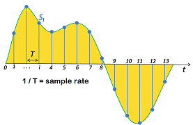

If you are new to digital audio, this section provides definitions of basic concepts found in most discussions of digital audio.
Digital audio is sound that has been converted into digital form, by taking samples at a repeated rate (called the sample rate or sampling rate), at a particular resolution expressed as the number of bits per sample (called the bit-depth).

For example, audio stored on a compact disk (CD) is sampled at 44,100 samples/second, or 44.1 kHz, and saved as 16-bit signed samples. Other common sample rates are 8 kHz or 16 kHz for telephony-quality voice, 48 kHz for DVD audio, and 96 kHz for high-definition audio. The sample rate must be at least twice as fast as the highest frequency that is to be converted; therefore CD's have an upper frequency limit of 22.05 kHz. High-definition audio may also use 20, 24, or even 32-bits per sample. Low-quality voice may be sampled at only 8 bits per sample. Higher bit depths reduce the SNR (signal to noise ratio).
Changing from a lower sample rate to a higher one is called upsampling; changing from a higher sample rate to a lower one is called downsampling.
Sound is converted into digital using a analog to digital converter (ADC), connected to a microphone or other analog audio input, and converted from digital back to analog using a digital to analog converter (DAC) connected to an amplifier and then a speaker or pair of headphones.
After being sampled, digital sound may stored in several formats. Some formats compress the audio to save space. Compression can be either lossless, meaning the audio when uncompressed, will be exactly the same as the input; other formats may be lossy, meaning some of the original audio may be lost, but it will usually be sounds that are hard to hear. Lossy compression typically achieves much higher compression rates than lossless (5% to 20% of the original size, compared to 50%-60%). Compression and decompression is done by software codecs.
Common Audio Formats
|
Format |
Lossy? |
Proprietary? |
Comments |
|
AAC (Advanced Audio Coding) |
Yes |
No |
Designed as successor to MP3. Audio codecs must be licensed. |
|
FLAC (Free Lossless Audio Codec) |
Yes |
No, open-source |
|
|
MP3 |
Yes |
No |
Was patented but patent has expired |
|
Ogg Vorbis |
Yes |
No, open-source |
|
|
Opus |
Yes |
No, open-source |
Low latency |
|
WAV |
No |
No |
Uncompressed linear PCM audio format used with CD's |
|
WMA (Windows Media Audio) |
No |
Yes |
|
There are various digital audio interfaces, designed to connect components together, either on the same board or via cables between boards. The one that is most relevant for us is I2S (Inter-IC sound) protocol which specifies a specific interface commonly used to connect hardware codecs, DACs, Bluetooth modules, and MCUs on the same board. It is not intended to be used over cables.
An I2S interface consists of the the following signals:
- Word clock line, which runs at the sampling rate and also indicates left/right channel, often abbreviated as LRCLK
- Bit clock line, often abbreviated as BCLK. The bit clock pulses once for each discrete bit of data on the data lines.
The bit clock rate = sample rate * # of channels * # of bits / channel
e.g. for CD audio, 44.1 kHz * 2 channels (stereo) * 16 bits/channel = 1.4112 MHz
- One or two serial data lines for input and output (ADCDAT and DACDAT)
Although not part of the standard, there is often a master clock (MCLK) running at 256 times the sample rate used for synchronization.
A typical codec may support both I2S format, and one or two variations (left-justified and/or right justified):

In I2S format, as shown in the top half of the figure above, LRCLK is low for the left channel and high for the right channel. and the most-significant bit (MSb) of the left channel data starts one bit clock (BCLK) late, such that the least significant bit (LSb) is actually in the right channel side.
In Left-Justified format, as shown in bottom half of the figure above, LRCLK is high for the left channel, and low for the right channel, and the most-significant bit (MSb) is lined up with the LRCLK and does not spill over into the opposite channel.
Below is a oscilloscope photo showing the LRCLK in yellow, and data in blue. Only the left channel has audio. The overlap in the I2S format is clearly visible, as well as the 16 individual data bits.

A codec or Bluetooth module can act as a Master, in which it generates the I2S clocks BCLK and LRCLK and sends them to the MCU (with the MCU providing a Master Clock):

or as a Slave, in which case the MCU generates the I2S clocks BCLK and LRCLK:

|
MPLAB Harmony Audio Help
|